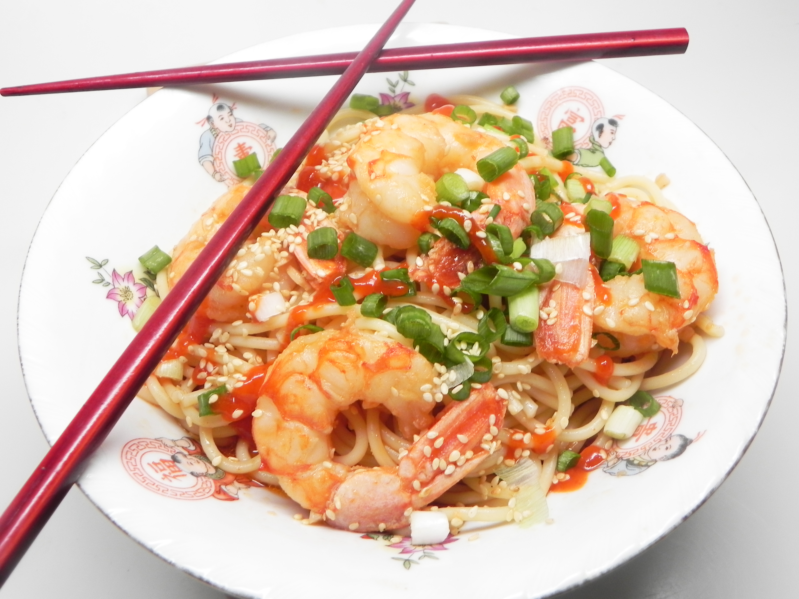

Asian-Style Shrimp Scampi

Description
Shrimp scampi with an Asian twist.
Ingredients
- 1 (8 ounce) package dry spaghetti
- 2 tablespoons peanut oil
- 16 jumbo shrimp, peeled and deveined
- ½ cup dry sherry
- 1 tablespoon sesame oil
- 4 cloves garlic, minced
- 1 teaspoon ginger paste
- ½ cup chicken broth
- 2 tablespoons reduced-sodium soy sauce
- 1 tablespoon sriracha sauce
- 1 tablespoon unsalted butter
- 1 lime, juiced
- 2 green onions, chopped
- 1 tablespoon toasted sesame seeds
Steps
- Bring a large saucepan of lightly salted water to a boil. Cook spaghetti in the boiling water, stirring occasionally, until tender yet firm to the bite, about 12 minutes.
- Meanwhile, heat peanut oil in a large skillet over medium-high heat. Sear shrimp until starting to firm up, about 2 minutes per side. Remove shrimp to a plate.
- Add sherry, sesame oil, garlic, and ginger paste to the skillet. Cook until fragrant, about 2 minutes. Add broth, soy sauce, and sriracha. Cook for 4 minutes. Add butter and let melt, about 1 minute.
- Return shrimp to the skillet and cook for 4 minutes. Remove from heat and stir in lime juice.
- Drain spaghetti and divide among 4 serving dishes. Evenly distribute sauce from the skillet and place 4 shrimp on each dish. Garnish with green onions and sesame seeds.